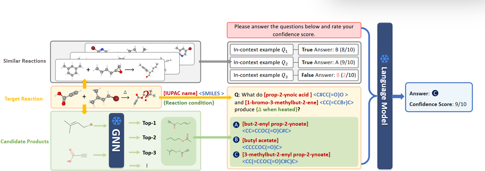
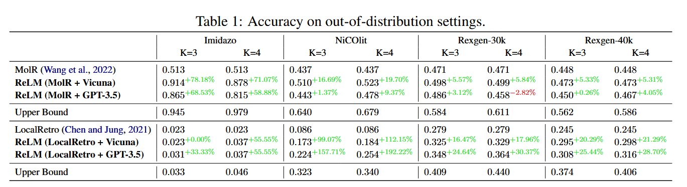
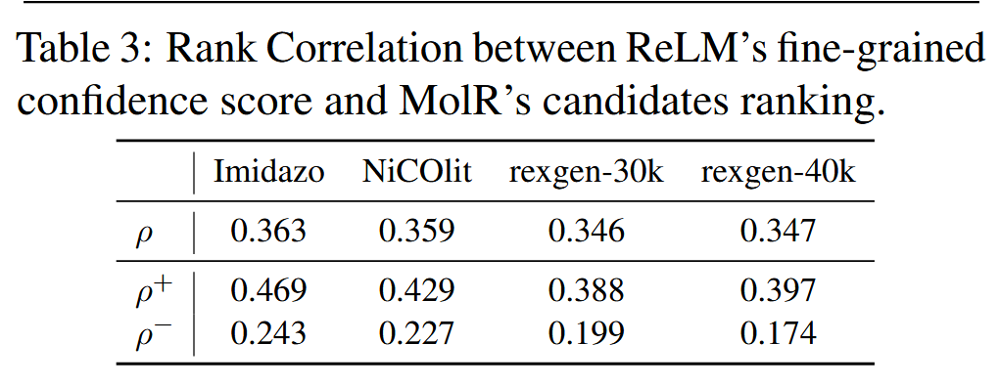
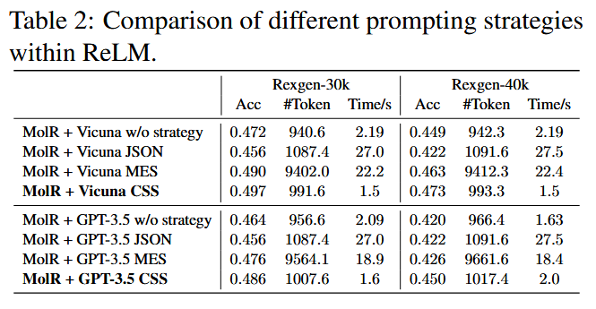

在化学领域，准确预测反应产物是药物合成、材料设计等应用的核心挑战。传统图神经网络（GNN）虽擅长解析分子结构，却受限于数据稀缺与文本信息的利用不足。而语言模型（LM）虽具备丰富的化学知识推理能力，却难以处理分子图结构。如何让两者优势互补？来自中国科大、新加坡国立大学等团队提出的ReLM框架 ，通过融合GNN的图结构理解与LM的语义推理能力，开创了化学反应预测的新范式，尤其在分布外（OOD）场景中表现惊艳。
摘要：预测化学反应是化学中的一个基本挑战，涉及预测给定反应过程的产物。传统技术特别是那些采用图神经网络（GNN）的技术，往往受到训练数据不足和无法利用文本信息的限制，从而削弱了它们在现实世界应用中的适用性。在这项工作中，我们提出了ReLM，这是一种利用语言模型（LM）中编码的化学知识来辅助GNN的新框架，从而提高了现实世界化学反应预测的准确性。为了进一步增强模型的稳健性和可解释性，我们引入了置信度评分策略，使LM能够自我评估其预测的可靠性。我们的实验结果表明，ReLM提高了基于GNN的最新方法在各种化学反应数据集中的性能，特别是在非分布环境中。代码可在以下网址获得https://github.com/syr-cn/ReLM.
背景：GNN与LM的“单打独斗”困境
- GNN的局限：传统GNN（如MolR、LocalRetro）依赖分子图结构建模，但在面对训练数据未覆盖的反应类型时，性能显著下降（如Imidazo数据集上LocalRetro准确率仅2.3%）。此外，GNN难以有效利用反应条件文本信息（如催化剂描述），导致同一反应物在不同条件下可能生成不同产物的场景中表现欠佳。
- LM的潜力与挑战：尽管LM（如GPT-3.5、Vicuna）在化学推理任务中展现出知识储备与逻辑能力，但其“黑箱”特性使预测可靠性存疑，且对分子图结构处理能力有限。
ReLM的核心创新：双向赋能，动态评估
ReLM通过三个关键输入 实现GNN与LM的协同（见图1）

👆图1:ReLM的总体框架。ReLM包含语言模型的三个关键输入：相似反应（灰色框）、目标反应及其条件（黄色框）和GNN生成的候选产物（绿色框）。具体来说，我们从最接近目标反应查询的训练样本中选择具有各种置信度得分的上下文示例。此外，我们选择GNN预测的可能性最高的K候选产品。
- GNN生成候选产物：利用GNN编码分子图结构，从候选池中筛选出与反应物最相似的Top-K产物（如K=3或4），形成初步预测集合。
- 上下文增强的LM推理：将候选产物、反应条件文本及相似反应的示例（通过潜在空间检索）输入LM，构建多选问题。例如，输入问题可能为：“在加热条件下，丙炔酸（C#CC(=O)O）与1-溴-3-甲基-2-丁烯（CC(=CCBr)C）反应的产物是？”并附上候选答案的IUPAC名称与SMILES表达式。
- 信心分数策略（CSS）：要求LM在输出答案时同步给出1-9分的置信度评分，并通过在上下文示例中引入故意错误答案与低分关联，训练LM自我评估可靠性。实验显示，CSS在几乎不增加计算成本的情况下，将准确率提升5%-10%。

ReLM的核心创新：三阶段协同，动态评估
ReLM通过上下文生成、信心评分策略与细粒度置信度评分策略的三阶段流程，实现了GNN与LM的深度协同，为化学反应预测提供了兼具准确性、可靠性与可解释性的解决方案。
- 上下文生成：构建多模态推理的基础
GNN首先基于分子图结构生成候选产物，并通过潜在空间检索相似反应案例，构建包含反应条件、候选答案及历史示例的多模态提示。这一步骤将GNN的结构化输出与LM的语义理解能力相结合，为后续推理提供丰富线索。
- 信心评分策略：动态评估与自我验证
ReLM引入信心评分策略（CSS），要求LM在输出预测时同步生成1-9分的自我评估分数。通过在上下文示例中穿插人为设计的错误答案与低分标签，CSS训练LM主动评估其预测可靠性，显著提升了分布外场景的准确率。
- 细粒度置信度评分策略：深入解析模型决策
ReLM进一步对每个候选答案生成细粒度置信度评分，并根据评分高低重新排序。这一策略不仅增强了模型的透明性，还为化学家提供了更可靠的决策支持工具，使其能够更深入地理解AI模型的推理过程。

技术突破：从数据到决策的全面优化
- OOD场景的卓越表现：在Open Reaction Database（ORD）的测试中，ReLM将GNN基线的准确率最高提升78.18%（如Imidazo数据集上MolR+ReLM准确率达91.4%）。
- 动态置信度揭示模型共识：通过分析LM与GNN的排名相关性（Spearman系数ρ），发现当GNN预测正确时，ReLM与之高度一致（ρ+≈0.4）；而当GNN错误时，ReLM主动纠偏（ρ−≈0.2），体现了LM的“批判性思维”。
- 效率与性能的平衡：对比多查询集成策略（MES）等传统方法，CSS以更低的计算开销（推理时间仅1.5秒/样本）实现更高准确率（见表2）。

📊 关键数据速览
| 数据集 | GNN基线准确率 | ReLM提升幅度 |
|---|---|---|
| Imidazo | 51.3% | +78.18% |
| NiCOlit | 43.7% | +19.70% |
| Rexgen-30k | 47.1% | +5.57% |
启示与展望：化学AI的“通用智能”之路
ReLM的成功印证了多模态融合与模型自我评估的重要性。近期，跨模态化学模型ChemDFM-X通过整合文本、分子图、光谱等多模态数据，进一步拓展了化学AI的边界。而ChemCrow等工具则展示了LLM与化学计算工具的协同潜力。未来，结合ReLM的动态置信机制与跨模态学习，或将催生更通用的化学智能体，实现从反应预测到逆合成、产率优化的全链条自动化。
💡 哲思结语
“化学的本质是变化的艺术，而AI的任务是解码变化的规律。”ReLM不仅是一次技术突破，更揭示了科学智能化的核心范式：让数据与知识共舞，让模型与人类共鸣 。